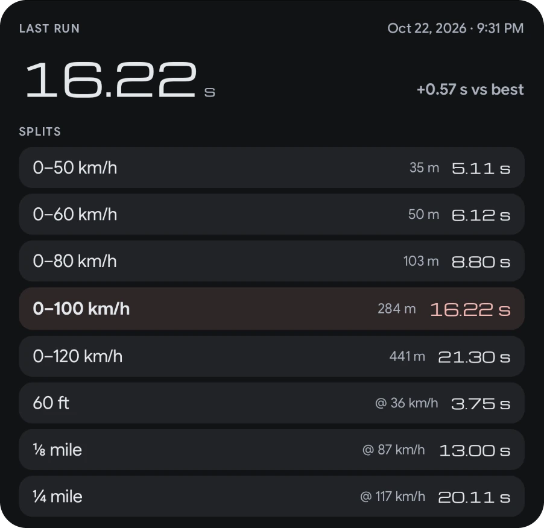
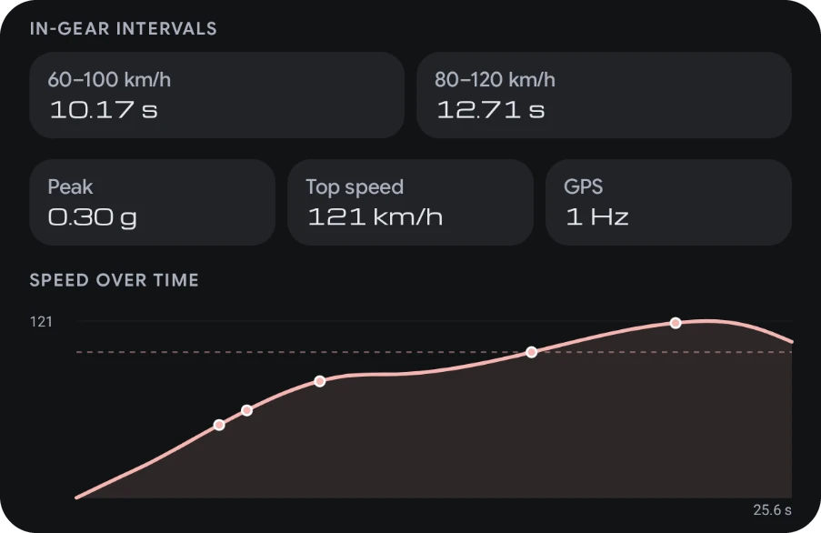

0–100 · Launch
From a standstill to 100 km/h (0–60 mph), with splits, 60 ft, ⅛ and ¼ mile.
0–100 with splits, 60 ft, ⅛ and ¼ mile with trap speed, braking and rolling tests, and a road dyno. The launch is detected precisely.
On your phone? Pick your head unit next to Install.
Closed courses and test venues only
FreePro



Launch, braking and overtake tests, timed from the moment you move. Splits at 50, 60, 80, 100 and 120 km/h with the distance each took, plus 60 ft, ⅛ and ¼ mile with trap speed. Every run is saved and compared with your best.
From a standstill to 100 km/h (0–60 mph), with splits, 60 ft, ⅛ and ¼ mile.
How far and how long it takes to stop from 100 km/h.
Rolling acceleration from 80 to 120 km/h, timed in gear. 60–100 is measured too.
Every launch also gives you the in-gear intervals, the peak g, your top speed and a speed-over-time trace with each split marked on the curve. The GPS rate is shown with the result, so you know how fine the data is.
A 10 Hz GPS gives finer intervals than a 1 Hz one.

Do a pull on a closed, level road and get your power at the wheels, with gear changes detected, the share lost to air drag and rolling, and your best run laid over the top. Power-to-weight puts the car in a class, and your garage keeps each car’s weight and body type.
An estimate of power at the wheels, from GPS speed and your car’s weight, on a level road with no wind. Engine power is usually 10 to 20 percent higher. A 10 Hz GPS gives a finer curve.
A typical head unit reads its GPS about once a second. At 120 km/h that’s one reading every 33 metres, and a lot happens in a corner in 33 metres. Mount a phone running DashLink Wireless and its GPS and motion sensors fill in the gaps.


Drag the speed, then switch between the car’s GPS alone and the car with your phone.
Illustration. Many head units’ GPS updates about once a second; yours may be faster. The phone sends up to 25 readings a second, at 10 or 25 Hz.


Phone sensors are part of DashLink Pro on the head unit. DashLink Wireless is free, for Android 7.0+ phones.
Three live screens, one tap apart. Upcoming pace notes stay on top in every mode, with the distance to the next one, and the cabin tints as you gain or lose time.


Track: lap time, live delta to your best and sector times, beside a heading-up chase map. Stop at the line or roll across it, and the clock starts by itself.
DashLink Racing is for track days, rallies on closed roads, recce and private test venues. Never time yourself on public roads. On first use the app asks you to accept its safety terms.
0–100, braking, 80–120, the road dyno and your stats keep working after the trial. Live modes and phone sensors come with Pro.
| Feature | Free | Drive | Pro |
|---|---|---|---|
| Dashboard (Dock), trips, fuel, logbook, car care | Included | Included | Included |
| Speedometers: Digital, Chrono, Minimal | Included | Included | Included |
| Performance tests: 0–100, braking, 80–120, dyno, stats | Included | Included | Included |
| Bluetooth music on the dashboard | Included | Included | Included |
| Diagnostics: fault codes in plain words and engine gauges (with an OBD-II adapter) | Included | Included | Included |
| Android Auto (USB, wireless, self mode) and auto-start | Not included | Included | Included |
| DashLink Racing: track day, rally, recce + pace notes, regularity (TSD), saved-track sessions, coach, session analysis | Not included | Not included | Included |
| Premium speedometers: Corsa, Sport, Hyper | Not included | Not included | Included |
| Diagnostics Pro: live data for every sensor, boost, AFR and oil gauges, pending codes, freeze frame, clearing codes, engine clusters | Not included | Not included | Included |
| Theme presets (all except Signature) and accent colours | Not included | Not included | Included |
| Home-screen widgets, steering-wheel key mapping, phone sensors | Not included | Not included | Included |
Every feature is unlocked during your free trial.
No. DashLink Racing is for closed courses only: track days, rallies on closed roads, recce and private test venues. Never time yourself on public roads.
No. DashLink uses your head unit’s GPS. For faster, more precise timing you can pair a phone running DashLink Wireless (phone sensors, Pro).
Check your event’s rules on electronic devices. Rules differ between organisers, especially for rallies and regularity events.
Yes. Send sessions, laps, tracks and pace notes to your phone over a direct, encrypted link, then export GPX or CSV. See DashLink Wireless.
Try all of it free during your trial. Afterwards DashLink Racing is part of Pro. The performance tests (0–100, braking, 80–120 and the road dyno) stay free.
They are estimates from GPS and your car’s mass and body type, useful for comparing your own runs. They are not a chassis-dyno measurement.